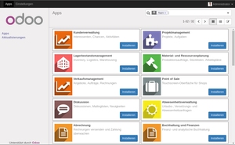

Odoo Installation
Achtung!
Die Verwendung dieses Howto geschieht auf eigene Gefahr. Bei Problemen mit der Anleitung melde dies bitte in der dazugehörigen Diskussion und wende dich zusätzlich an den Verfasser des Howtos.
Hinweis:
Diese Howto-Anleitung wurde von tcs am 3.2.2017 unter Ubuntu 14.04, Ubuntu 16.04 und Ubuntu 16.10 erfolgreich getestet.
Zum Verständnis dieses Artikels sind folgende Seiten hilfreich:
Odoo  ist ein in Python programmiertes Enterprise-Resource-Planning System. Die Software setzt eine PostgreSQL Datenbank voraus und lässt sich in nahezu allen Details an gegebene Anforderungen anpassen. Weitere Informationen sind auf der Herstellerseite verfügbar.
ist ein in Python programmiertes Enterprise-Resource-Planning System. Die Software setzt eine PostgreSQL Datenbank voraus und lässt sich in nahezu allen Details an gegebene Anforderungen anpassen. Weitere Informationen sind auf der Herstellerseite verfügbar.
Dieses HowTo soll die nötigen Schritte vorstellen, um eine lauffähige Installation der Odoo Community Edition auf einem Ubuntu Server 14.04 LTS/16.04 LTS/16.10 vorzunehmen. Odoo ist ein außerordentlich mächtiges und komplexes Tool, welches bei entsprechendem Wissen auf nahezu alle Anforderungen maßgeschneidert werden kann. Die Community Edition wird von Odoo kostenfrei zur Verfügung gestellt, inkludiert allerdings keinerlei Support. Darüber hinausgehend wird auch die kostenpflichtige Cloud- und die Enterpriseversion angeboten. Eine Übersicht über die verschiedenen Versionen befindet sich auf der Herstellerseite.
Um Odoo auf einem Ubuntu System zu betreiben empfiehlt sich die auf der Herstellerseite vorgestellte Vorgehensweise, die aktuellste Version aus dem git Repository zu laden und anschließend entsprechend zu konfigurieren.
Der größte Vorteil dieser Vorgehensweise dürfte die – wenn auch unter Umständen ungewohnte – Möglichkeit sein, per git pull Updates direkt vom Hersteller einzuspielen. Weiters gibt sie einem die Möglichkeit, präzise nach Vorgabe/Wunsch zu installieren und später bei fast immer unvermeidlichen Anpassungen nicht nachbessern zu müssen.
Auch für Entwicklungs- oder Testsysteme birgt dieser Ansatz große Vorteile, da man ohne großen Aufwand verschiedene Installationen/Versionen parallel betreiben kann.
Useranlage¶
Als erstes muß ein Benutzer angelegt werden, der Zugriffsberechtigung für die Installationsordner hat und mit dessen ID die erforderlichen Serverprozesse gestartet werden:
sudo adduser -system -home=/opt/odoo -group odoo
Der Parameter -system bewirkt dabei, dass der angelegte Benutzer keine zugeordnete Login-Shell hat, was aber nicht bedeutet, dass man ich nicht für Shellbefehle verwenden kann:
sudo su - odoo -s /bin/bash
Datenbank¶
Odoo setzt PostgreSQL voraus, die Installation gestaltet sich angenehm unkompliziert:
sudo apt-get install postgresql
Damit nicht mit dem root-User der Postgres Datenbank gearbeitet werden muss, sollte ein neuer Benutzer angelegt werden:
sudo su - postgres createuser --createdb --username postgres --no-createrole --no-superuser --pwprompt odoo Enter password for new role: ************ Enter it again: ************ exit
Abhängigkeiten installieren¶
Damit die in Odoo implementierten Fähigkeiten und Services funktionieren können, müssen einige Abhängigkeiten erfüllt werden:
node-less
python-babel
python-cups
python-dateutil
python-decorator
python-docutils
python-feedparser
python-gdata
python-geoip
python-gevent
python-imaging
python-jinja2
python-ldap
python-libxslt1
python-lxml
python-mako
python-mock
python-openid
python-passlib
python-psutil
python-psycopg2
python-pychart
python-pydot
python-pyparsing
python-pypdf
python-reportlab
python-requests
python-simplejson
python-tz
python-unicodecsv
python-unittest2
python-vatnumber
python-vobject
python-werkzeug
python-xlwt
python-yaml
python-zsi
wkhtmltopdf
 mit apturl
mit apturl
Paketliste zum Kopieren:
sudo apt-get install node-less python-babel python-cups python-dateutil python-decorator python-docutils python-feedparser python-gdata python-geoip python-gevent python-imaging python-jinja2 python-ldap python-libxslt1 python-lxml python-mako python-mock python-openid python-passlib python-psutil python-psycopg2 python-pychart python-pydot python-pyparsing python-pypdf python-reportlab python-requests python-simplejson python-tz python-unicodecsv python-unittest2 python-vatnumber python-vobject python-werkzeug python-xlwt python-yaml python-zsi wkhtmltopdf
sudo aptitude install node-less python-babel python-cups python-dateutil python-decorator python-docutils python-feedparser python-gdata python-geoip python-gevent python-imaging python-jinja2 python-ldap python-libxslt1 python-lxml python-mako python-mock python-openid python-passlib python-psutil python-psycopg2 python-pychart python-pydot python-pyparsing python-pypdf python-reportlab python-requests python-simplejson python-tz python-unicodecsv python-unittest2 python-vatnumber python-vobject python-werkzeug python-xlwt python-yaml python-zsi wkhtmltopdf
Installation¶
Die Installation von Odoo wird, wie eingangs erwähnt, durch git vorgenommen, da man durch diese Vorgehensweise die Möglichkeit hat, die Software sehr schnell und unkompliziert zu aktualisieren. Außerdem hat man auf diese Weise Zugriff auf die aktuellsten Versionen, noch bevor sie als Paket zur Verfügung stehen. Dies kann hilfreich sein, wenn man beispielsweise von einem Bug betroffen ist, der zwar schon behoben, aber noch nicht in den apt Repositories verfügbar ist.
Sollte git noch nicht auf dem System vorhanden sein muß es installiert werden:
git
mit apturl
Paketliste zum Kopieren:
sudo apt-get install git
sudo aptitude install git
Mit dem zuvor erstellten Benutzer werden nun die Dateien per git heruntergeladen:
sudo su - odoo -s /bin/bash mkdir odoo10 cd odoo10 git clone https://www.github.com/odoo/odoo --depth 1 --branch 10.0 --single-branch . exit
Konfiguration¶
Im Repository ist bereits eine rudimentäre Konfigurationsdatei für den Server vorhanden, diese kann man als Basis für die eigene Installation verwenden:
sudo cp /opt/odoo/odoo10/debian/odoo.conf /etc/odoo10.conf sudo chown odoo: /etc/odoo10.conf sudo chmod 0640 /etc/odoo10.conf
Die Datei sollte nicht von jedem gelesen werden können, da sich Datenbankzugänge darin befinden. In diesem Fall dürfen nur die User root und odoo schreibend, Mitglieder der Gruppe odoo lesend zugreifen.
Um den Odoo Server starten zu können sind einige kleine Anpassungen in der Konfigurationsdatei vorzunehmen. Dies kann mit einem Texteditor wie z. B. nano erledigt werden. Wichtig ist, den Editor von einem ausreichend berechtigten User aufzurufen, um die vorgenommenen Änderungen auch speichern zu können:
sudo nano -w /etc/odoo10.conf
In der Konfigurationsdatei müssen die Pfadangaben zu Addon- und Logverzeichnis sowie die Datenbankverbindung (wie zuvor angelegt) angegeben werden:
1 2 3 4 5 6 7 8 9 10 11 | db_host = localhost db_maxconn = 64 db_name = False db_password = ************ db_port = 5432 db_template = template1 db_user = odoo addons_path = /opt/odoo/odoo10/addons logfile = /var/log/odoo/odoo10.log ; Für jede Installation muß ein eigener Port angegeben werden, Standard: 8069 ;xmlrpc_port = 8069 |
Der in der Konfigurationsdatei angegebene Ordner für die Logiles muß manuell erstellt werden, da dieser nicht automatisch angelegt wird:
sudo mkdir /var/log/odoo sudo chown odoo:root /var/log/odoo
Der erste Test:
sudo su - odoo -s /bin/bash /opt/odoo/odoo10/odoo-bin
Der Server wird dadurch auf der aktuellen Konsole gestartet und man kann dort die Meldungen, die sonst in das angegebene Logfile geschrieben würden, mitverfolgen. Tauchen bei diesem ersten Test keine Fehler auf, kann man den Server mit der Tastenkombination Strg + C beenden.
Hinweis:
Läuft bereits eine andere Instanz auf dem Standardport 8069, muß man mittels Parametrisierung des Aufrufs einen anderen, nicht benutzten Port angeben:
/opt/odoo/odoo10/odoo-bin --xmlrpc-port=8070
Per
exit
verläßt man die für den User odoo geöffnete Shell.
Startscript¶
Um den Server nicht immer von der Shell ausführen zu müssen empfiehlt es sich, ein Startscript zu erstellen und dieses ggf. automatisch ausführen zu lassen. Bei Einsatz von SysVinit gibt es ein vorbereitetes Script, das man als Basis nutzen kann:
sudo cp /opt/odoo/odoo10/debian/init /etc/init.d/odoo10
Da die Pfadangaben nicht mit der vorliegenden Installation übereinstimmen muß man folgende Variablen anpassen:
1 2 3 | DAEMON=/opt/odoo/odoo10/odoo-bin CONFIG=/etc/odoo10.conf LOGFILE=/var/log/odoo/odoo10.log |
Abschließend setzt man die Berechtigungen für das Script:
sudo chmod 0755 /etc/init.d/odoo10 sudo chown root: /etc/init.d/odoo10
Für Systemd wird von Odoo derzeit leider noch kein Startscript mitgeliefert, glücklicherweise gibt es hier ein Script von Ben Olsen, was hier als Basis dient:
1 2 3 4 5 6 7 8 9 10 11 12 13 14 15 16 17 | [Unit] Description=Odoo 10 server After=syslog.target network.target [Service] Type=simple User=odoo Group=odoo # This line connects the odoo server to the Xvfb virtual display and allows wkhtmltopdf to work Environment="DISPLAY=:0" "PYTHONPATH=/usr/local/lib/python2.7/dist-packages/:$PYTHONPATH" ExecStart=/opt/odoo/odoo10/odoo-bin -c /etc/odoo10.conf --db-filter=imsar_prod # Give a reasonable amount of time for the server to start up/shut down TimeoutSec=300 [Install] WantedBy=multi-user.target |
Test des Servers mit Startscript¶

Start des Odoo Servers mit SysVinit:
sudo service odoo10 start
Start des Odoo Servers mit Systemd:
sudo systemctl start odoo10.service
Die Meldungen lassen sich im Logfile verfolgen:
sudo less /var/log/odoo/odoo10.log
Sollten hier keinerlei Auffälligkeiten oder Fehler/Warnungen verzeichnet sein kann man sich der weiteren Konfiguration durch das Webfrontend zuwenden. Dafür ruft man im Browser sinngemäß die folgende Adresse auf:
Nachdem dies der erste Aufruf ist und es dementsprechend noch keine Datenbank für Odoo gibt, wird man sofort zum Datenbank Management weitergeleitet. Das Passwort für dem administrativen Benutzer wird als Klartext in der Konfigurationsdatei gespeichert, daher ist es sehr wichtig, die Zugriffsrechte auf diese Datei gewissenhaft zu setzen. Der letzte Funktionstest ist, den Server per Script zu stoppen und zu kontrollieren, ob dies erfolgreich durchgeführt wird.
SysVinit:
sudo service odoo10 stop
Systemd:
sudo systemctl odoo10.service stop
Der Vorgang lässt sich sowohl im Logfile verfolgen (s. o.) als auch über die Prozessliste kontrollieren. Hierfür sucht man in der Ausgabe des Befehls ps nach dem Begriff "odoo":
ps aux | grep odoo
Läuft eine Instanz des Odoo Servers, sollte jetzt ein Suchergebnis ausgegeben werden, das in etwa wie folgt aussieht:
1 | odoo 10769 52.0 1.3 441684 51384 ? Sl 14:00 0:00 python /opt/odoo/odoo10/odoo-bin --config /etc/odoo10.conf --logfile /var/log/odoo/odoo10.log |
Automatisierung¶
Soll der Odoo Server automatisch beim Systemstart gestartet und beim Herunterfahren gestoppt werden bindet man das Script entsprechend ein.
SysVinit:
sudo update-rc.d odoo10 defaults
Systemd:
sudo systemctl enable odoo10.service
Nach einem Neustart des gesamten Systems sollte der Odoo Server automatisch gestartet sein, was sich anhand des Logfiles und der Prozessliste kontrollieren läßt.
Weitere Schritte¶
Auf der zuvor erwähnten Konfigurationsseite (Datenbank Management System) kann man die zu verwendende Datenbank konfigurieren, im Anschluß sollte man unbedingt das Passwort für den administrativen Benutzer vom Standard "admin" auf einen sicheren Wert ändern. Wie bereits erwähnt ist Odoo ein überaus mächtiges und komplexes Werkzeug, das nach der hier beschriebenen Installation noch einige Konfigurations- und Einrichtungsarbeit erfordert, bevor es wirklich genutzt werden kann. Um Odoo besser kennenzulernen empfiehlt es sich, bei der Ersteinrichtung Beispieldaten in die Datenbank schreiben zu lassen, damit man dadurch eine bessere Vorstellung von den Fähigkeiten dieses ERP Systems bekommen kann.
Troubleshooting¶
Sollte es bei der Installation von PostgreSQL zu Fehlermeldungen bezüglich falsch gesetzter oder nicht vorhandener locales kommen, muß man sicherstellen, daß auf Server und Client die entsprechenden Einstellungen kompatibel zueinander sind. Verbindet man sich per SSH mit einem Ubuntu 14.04 in Standardkonfiguration werden clientseitig mitgeschickte locales berücksichtigt. Dies kann zu Problemen führen, wenn diese locales nicht auf dem Server vorhanden sind. Lösen kann man dieses Problem auf zwei Wegen:
Deaktivieren von clientseitig mitgeschickten locales in der SSH Serverkonfiguration durch Auskommentieren der Option AcceptEnv¶
1 2 3 4 5 | # /etc/ssh/sshd-config ... # Allow client to pass locale environment variables #AcceptEnv LANG LC_* ... |
- Erstellt mit Inyoka
-
 2004 – 2017 ubuntuusers.de • Einige Rechte vorbehalten
2004 – 2017 ubuntuusers.de • Einige Rechte vorbehalten
Lizenz • Kontakt • Datenschutz • Impressum • Serverstatus -
Serverhousing gespendet von